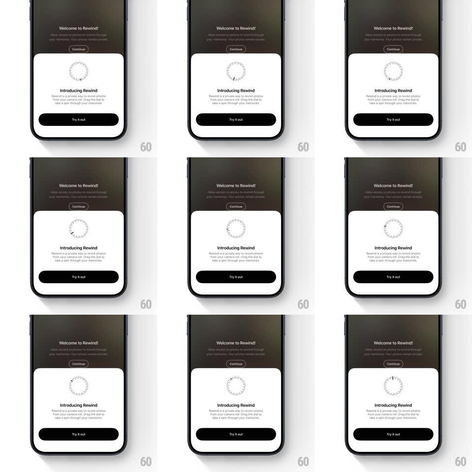

Media
Frame-by-frame

Rebuild this animation 1:1: Rewind's onboarding sheet - a skeuomorphic circular dial illustration rotates slowly and continuously inside an "Introducing Rewind" card over a dark welcome screen.

Rebuild this animation 1:1: Rewind's onboarding sheet - a skeuomorphic circular dial illustration rotates slowly and continuously inside an "Introducing Rewind" card over a dark welcome screen. ## Integration An onboarding bottom sheet over a welcome screen; the dial is a single rotating asset (CSS transform or rAF), no dependencies required. ## Scene - Top area: dark warm-brown/olive gradient field with a "Welcome to Rewind!" heading, one line of sub copy, and a small outlined "Continue" button. - Bottom sheet: white card with large rounded top corners. - Sheet content: a circular dial illustration - tick marks arranged around a ring with one colored indicator mark, like a combination dial; heading "Introducing Rewind"; copy "Rewind is a private way to revisit photos from your camera roll. Drag the dial to take a spin through your memories." - Sheet footer: full-width black "Try it out" button with rounded corners. ## Motion spec Pattern: continuous idle rotation of a skeuomorphic dial inside an onboarding sheet. - The dial rotates around its center at a slow, constant speed (~8-10s per full revolution), linear timing, no easing. - The rotation loops indefinitely with no pauses or direction changes. - All other elements (heading, copy, buttons, background) stay static. ## Calibration - Dial speed: ~8-10s per 360deg, linear. - Transform-origin: exact center of the dial. ## Reduced motion The dial is static; no rotation. ## Don't miss - The rotation is subtle and constant - this is an idle texture, not an attention-grabbing spin. - Linear timing: no speed-up or slow-down across the loop. - The dial's colored indicator mark is what makes the rotation legible - keep the contrast.